Bem-vindo a HyBrasil – A Ilha Paraíso, a única ilha conhecida da existência, cercada por névoas eternas e habitada por criaturas de imenso poder. Este manual contém o conhecimento essencial para guiar a sua jornada e dominar o Motor de Regras.
Em HyBrasil, as Ordens não são simples guildas mercenárias, mas tradições vitais para a contenção das forças naturais hostis. Os heróis pertencem a uma destas cinco frentes, cada uma com o seu papel na sociedade e no campo de batalha.
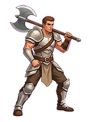
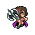
"Protege cidades e caravanas de ataques diretos e cercos."
Ataque Inicial: 2 | Vida Máxima: 4
Habilidade - Ataque Poderoso: Quando estiver na retaguarda ou na frente, aumenta o Ataque do próprio personagem num valor igual ao Nível. (Bônus não acumulativo).
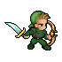
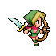
"Vigia fronteiras longínquas, florestas e estradas perigosas."
Ataque Inicial: 4 | Vida Máxima: 2
Habilidade - Ataque Preciso: Ataca exclusivamente da retaguarda. Causa dano direto (igual ao seu Ataque) à retaguarda inimiga, ignorando a Frente. Se restar apenas a Frente inimiga, causa dano reduzido (igual ao seu Nível).
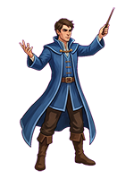
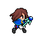
"Estuda fenômenos arcanos raros e perigos sobrenaturais."
Ataque Inicial: 5 | Vida Máxima: 1
Habilidade - Ataque Mágico: Ataca da retaguarda com poder massivo, causando o seu dano total de Ataque diretamente ao inimigo que estiver na linha de Frente.
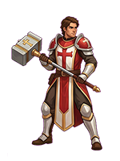
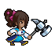
"Mantém comunidades unidas, trata feridos e acalma regiões instáveis."
Ataque Inicial: 1 | Vida Máxima: 5
Habilidade - Pulso de Cura: Atua na retaguarda. Em cada turno, recupera passivamente a Vida do aliado que estiver na Frente num valor igual ao seu Nível.
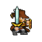
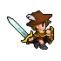
"Mediadores inabaláveis que intervêm quando o caos ameaça dominar."
Ataque Inicial: 3 | Vida Máxima: 3
Habilidade - Defesa Justiceira: Uma defesa de ferro. Independentemente de estar na Frente ou na Retaguarda, o Paladino ignora (bloqueia) dano igual ao seu próprio Nível sempre que sofre um ataque.
Em HyBrasil RPG, as batalhas são intensas, estratégicas e resolvidas automaticamente pelo Mestre da IA (Gemini). O seu papel como jogador é gerir os atributos, tomar decisões de exploração e, fundamentalmente, escolher a Formação (Frente ou Retaguarda) da sua dupla antes dos embates.
Quando um combate é acionado, a narrativa pausa e a Arena Visual é ativada. O ecrã divide-se em duas forças:
O Mestre IA processa toda a matemática nos bastidores e gera um Pergaminho de Resolução seguindo esta ordem inquebrável em cada turno:
Se sobreviver ao confronto, a dupla tem a chance de se recompor. Ao final de cada vitória, a Vida de ambos os heróis é restaurada para a sua Vida Máxima automaticamente. Além disso, o sistema conta as suas glórias: a cada 2 vitórias exatas, o Mestre irá pausar a aventura e perguntar a qual dos dois heróis deseja atribuir +1 Ponto de Experiência (XP), o que melhorará os seus atributos ou os fará subir de nível!
Ao atingir o Nível 2 (com 3 pontos de XP acumulados), o vínculo espiritual dos heróis manifesta um Auxiliar Místico. Eles não ocupam espaço na fila de combate, mas ligam-se à alma do herói, fornecendo benefícios distintos dependendo da posição de combate.
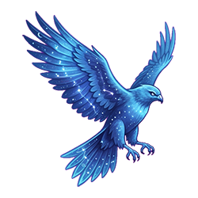
Classe: Guerreiro(a)
Um majestoso falcão heráldico feito de energia pura e chamas azul-celestes.
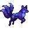
Classe: Caçador(a)
Uma raposa celestial flutuante de três caudas que abriga poeira estelar em seu pêlo.
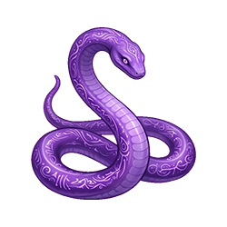
Classe: Mago(a)
Uma veloz serpente formada por chamas violetas sólidas e runas arcanas antigas.
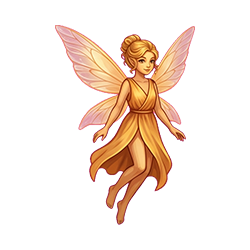
Classe: Clérigo(a)
Uma silhueta diminuta e esguia adornada com asas feitas de calor e luz dourada reconfortante.
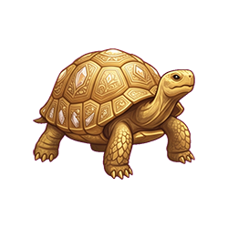
Classe: Paladino(a)
Uma tartaruga terrestre impassível, cujo casco é esculpido em pesados cristais de marfim.
Estas são as quatro forças primordiais que ameaçam desequilibrar a ilha. Encontros com estas entidades são raros, mortais e nunca acontecem sem que a ilha avise primeiro através de pesadelos e sinais.
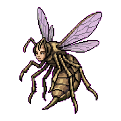
Força Regente: Os Selvagens
A soberana absoluta da mente coletiva. Comanda exércitos insetoides e artrópodes gigantes com um foco militar devastador, assimilando a biologia de HyBrasil.
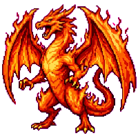
Força Regente: As Bestas
O próprio poder destrutivo ancestral de HyBrasil encarnado em escamas colossais de fogo místico e fúria primal capaz de derreter as montanhas de Pedralta.
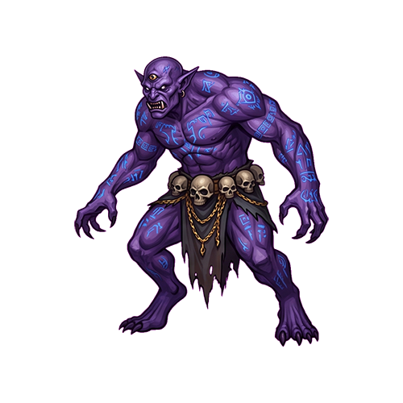
Força Regente: Os Monstros
Uma entidade profética e distorcida oriunda das trincheiras abissais. Os seus múltiplos olhos e tentáculos baralham a mente dos homens antes de lhes rasgar a carne.
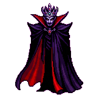
Força Regente: Os Mortos
Senhor absoluto do tempo decaído e da memória esquecida. É capaz de reerguer e escravizar os ecos sombrios e as almas passadas dos que caíram na névoa.